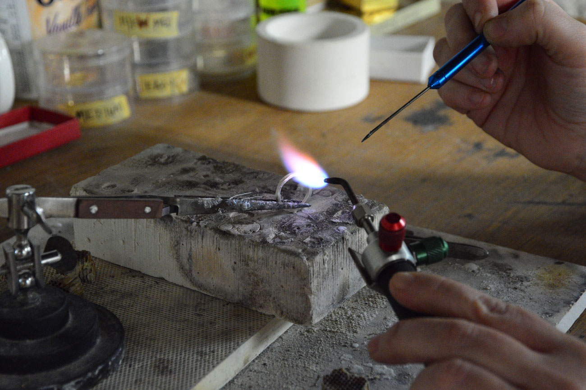

As a jewellery designer and maker, I’m constantly in awe of how jewellery has the power to symbolize so many emotions. Jewellery can represent love, commitment, mourning, celebration and ancestry. As we adorn ourselves with jewellery, the object becomes part of our identity.
While attending the Nova Scotia College of Art and Design in Halifax, I chose jewellery as my focus because I wanted to make something wearable, permanent and precious. I wanted to be a maker who carried on the long tradition of creating meaningful, well designed and carefully crafted pieces. After working and learning from several jewellery designers in Toronto, I started my own business.
Over the years, I have developed a collection of small batch production lines as well as creating many one of a kind pieces. I use a combination of lost wax casting and fabrication to make my work. Both methods are essential to my practice as they allow a certain flexibility and efficiency. I work in gold, silver and platinum and I often use pearls, semi precious and precious gems as accents in my designs.
When i design my jewellery, I work to pair down shapes to their most minimal form. Once I have narrowed in on a form, I add decoration and small details that complement the original shape. this allows me to remain true to a simple and clean aesthetic while featuring distinct and elegant details.